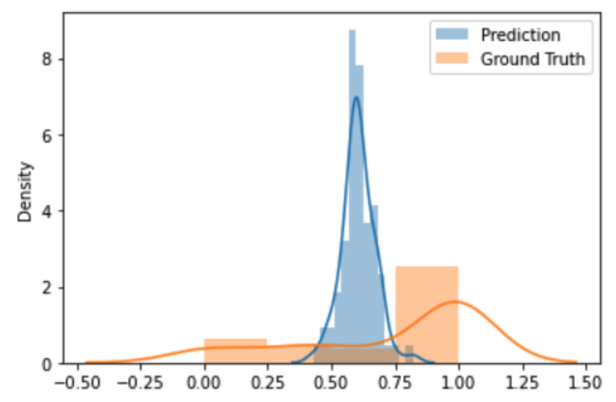
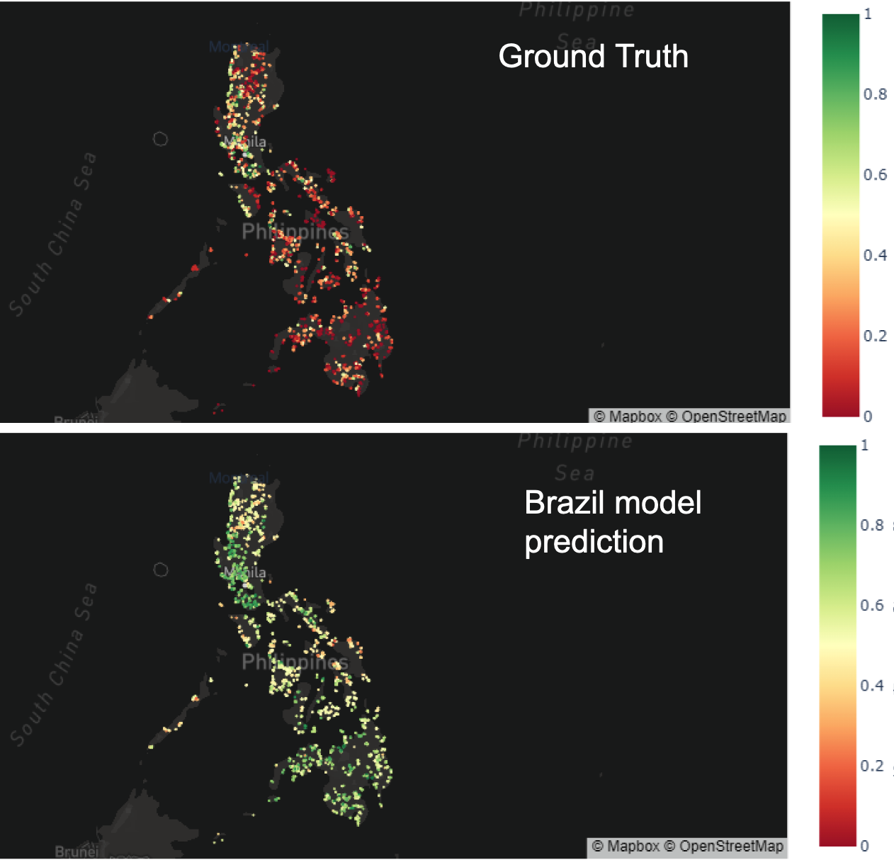
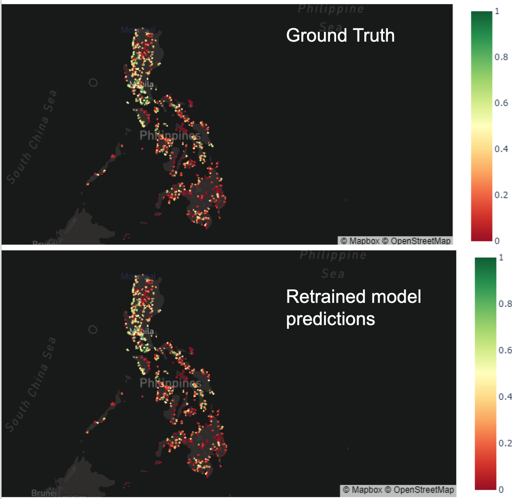
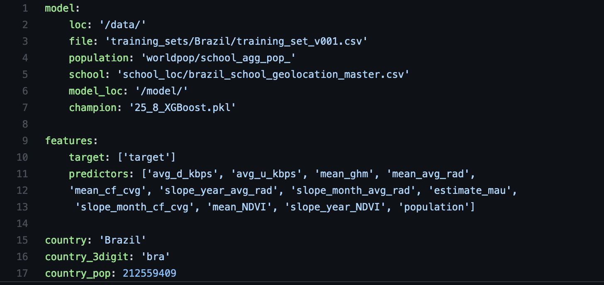
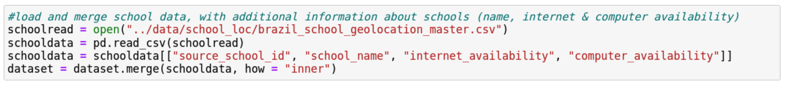
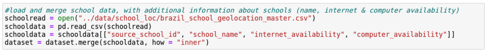
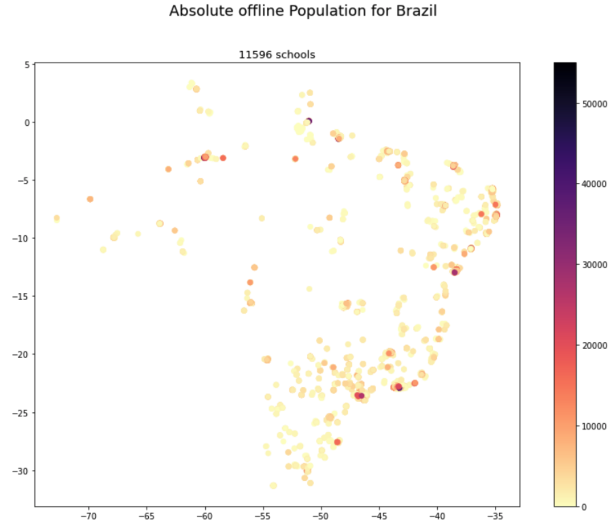
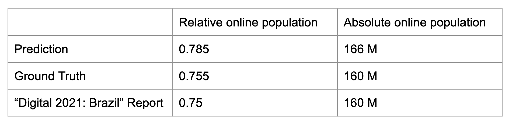
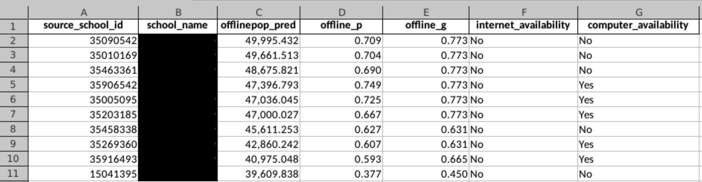

Model Application
Thailand
Our next big step was applying the best model to Thailand data. We were curious to apply the model as we were not sure that the same assumptions that are true for Brazil would hold true for Thailand. While the satellite data and vegetation may look the same, the national level economic and political indicators were not accounted for in the model. This is because, due to the project scope and capacity, we did not train multiple different national models. Had we had more time and data, perhaps this would have been an alternative route and we could have included some of this information. Instead, we trained a model exclusively on Brazil. For more discussion on future multi-national models, please see the conclusion. Therefore, the limitations for our model are rooted in basic assumptions that local areas can be comparable.
A second limiting factor was the nature of Thailand data. We wanted to predict and evaluate the Thai schools in the same manner that we did for the Brazil schools. However, the survey data that served as ground truth for Brazil was on an enumeration area level while the survey data for Thailand was on a province area level (of which there are 77 in Thailand). These area units are not comparable and made the evaluation for Thailand more complicated.
Furthermore, due to their small size, enumeration areas can be assumed to be more homogenous regarding demographics and also internet connectivity. As Thai provinces are much larger it seems to be unreasonable that one level of connectivity holds true for the entire province. Below you can see the school area level predictions, which mostly appear to be on a reasonable level, though the absence of fine-grained ground truth data prevents model evaluation. For that reason we subsequently perform the only evaluating measures that the ground truth data allows. First, we scale the school predictions up to a province level by calculating a population-weighted province connectivity share. We then compare these province-level values to the ground truth data visually and in a distribution plot. The large discrepancy between prediction and ground truth can potentially reflect upon our model and its questionable performance, but it also largely reflects on the raw survey data itself as we are skeptical of the amount of provinces that have 100% internet connectivity.
Steps in our model application to new data. Please click here for a complete predict.py script. Click here for a Jupyter notebook with the XGBoost Predictions and its html equivalent.
-
Using the predict_config, we load the Thailand data with the school points and the same predictors used by the original model.
-
We then load the model from the provided model folder. The following code reloads the model and utilizes it to predict the connectivity on the Thailand dataset:

- After that, we examine the predictions on a map: Here are the maps that show the schools' predictions of relative online population from 0-1 in Thailand. Schools provided by OpenStreetMaps in this case.

Subsequently, we modify the map to only display schools predicted to be below 50% internet connectivity, by the best Random Forest model and XGBoost model. Both models predicted 97 schools where less than half of the individuals around it are connected, but the patterns of schools differ slightly. From a first visual inspection we could draw the conclusion, that high offline school areas are mostly predicted in more northern areas and areas close to the Thailand national borders.

In order to compare our predictions to the ground truth, we aggregated the schools up to a province level as survey data was only provided on that level. This measure of evaluation proved challenging for a number of reasons as stated above.
The following graphics compare predicted and survey data province level connectivity shares on a country map and in a distribution histogram:


By visual inspection, we can see that the model predictions on a province level diverge greatly from the existing ground truth. While the predictions are roughly normally distributed across the provinces with a small range of predictions, the range of ground truth connectivity shares appear to be much broader. Therefore, we are uncertain about the ability for our Brazil model to accurately predict school areas' internet connectivity in Thailand. Nevertheless, it seems unreasonable that more than half of Thai provinces have a 100% connectivity rate which raises the uncertainty, whether the large average error of 0.35 was caused by the model or the ground truth data.
Philippines
Model Application
In a next step we applied the model trained on Brazilian data to the Philippines. As opposed to Thailand, survey microdata in this case was available on a significantly more granular level. The microdata contained geographic information down to the barangay level. The approximately 42000 Barangays are the lowest administrative districts in the Philippines and can be defined as neighborhoods, quarters or small villages. Our dataset on which the model was applied consisted of around 4000 schools, that were located in Barangays featured in the survey. Furthermore, for the evaluation of model application and the subsequent model training (see below), we used individual instead of household microdata, since the household dataset showed insufficient sample sizes within a Barangay and too low variation.
The following graphic shows the predictions for connectivity around schools in the Philippines when applying the model trained on Brazil. When evaluating the prediction we can clearly see, that they largely diverge from the ground truth microdata. Nevertheless, at this point it is not clear whether the significant discrepancy stems from the model's inaccuracy or from limitations within the survey data. On the one hand, online sources like the "Digital 2021: The Philippines Report" (https://datareportal.com/reports/digital-2021-philippines) state that the average connection rate in the Philippines is around 67% and much closer to our prediction (average connectivity of around 60%), than to the survey data (average connectivity around 30%). On the other hand, it may well be, that the two countries are simply too different from each other to be able to apply the Brazil model to the Philippines.

Model Training
The fine-grained microdata and availability of barangay shapefiles made it possible to train a new model for the Philippines on the same dataset, that we applied the Brazil model to. Using the same hyperparameters as for the champion Brazil model we train an XGBoost model on the Philippines data. As depicted in the graphic below, the new model performs accurately in predicting online population around the featured schools, as the average error is decreased to below 0.01. The graphic below maps predicted and ground truth connectivity levels around schools.

Conclusion: Extension to other countries
The previous extensions of our analyses to further countries have yielded multiple important insights. First of all, the application of one country-specific (Brazil) model resulted in significatly larger errors, than in the original country. It is unclear to what extent the great disparity between the countries or the problematic microdata lead to this inaccuracy. However, it is clear that microdata should be as fine-grained and representative as possible in order to enable reasonable model evaluation and possibly model training. When comparing the applications to Thailand and the Philippines we can see, that the difference in data quality (and granularity) also resulted in diverging model evaluation and retraining possibilites.
The model training on a new country turned out to be a great opportunity. At this point, we are able to train a model that accurately predicts the online population around schools if reasonable microdata is available. In the future, this does not necessarily have to be survey data, but could also stem from other data sources. Nevertheless, it might still be possible that a model is created that can be applied to any country even without microdata at hand. Further research should now aim to combine training datasets (e.g., from Brazil and the Philippines) and train a multi-national model. To extend to applicability to a global level, microdata for as many countries as possible should be retrieved in order to train one large model. Eventually it could be, that one highly predictive model is created that can be applied to any desired country. Further elaboration on this extension can be found in the Discussion section.
Further Application
Configuration file
For both the school priorization and the following aggregation, a specific congfiguration file (predict_config.yaml) was used. It contains case specific information like the data paths, predictor variable set, country name, country population, and steps on implementing the champion model in mlflow. Within this file, these characteristics can easily be updated. If, for instance, one trains a new model, the configuration file is where you can point to the location of the new model as opposed to in the corresponding notebooks or scripts. This simplifies model prediction and minimizes human error.

School Priorization
Building on our school area predictions and additional information such as population or potential internet connectivity, we create a prioritization list of schools. One can change this priorization based on various indicators like relative offline population or absolute offline population. Furthermore, if the data contains geographic information, the priorization list can be filtered by a specific federal state or to schools in rural areas.
As a first step, the feature-engineered training dataset for the respective country (in the following example: Brazil) and the pickled champion model are loaded. The imported model is then applied to the country's data and predicts online population for the schools featured in the dataset.
Within this dataset, where schools are the rows, we can merge in more information on absolute population data of that school and information around the school's internet and computer availability. While population data is necessary to calculate the absolute offline population around a school, additional school information such as internet availability or pupil count might not be at hand for some countries. Therefore, that type of data is optional and not required for initial priorization. The following code chunks load the specific additional datasets and merge them to the initial training set. To only keep the correct absolute population variable we first drop the pixel population values featured in the model. If school location data was pulled by OSM and does not contain further information the chunk should be commented out.
 

Since our model was not restricted to predict only values between 0 and 1, (for example it predicted values above 1 and below 0) we first standardized predicted values to be between these boundaries. Secondly, we multiply the prediction of online population share by the population count, which yields the estimated absolute online population around a school. The corresponding offline population is calculated by taking 1 - "online population share" and the multiplying this value with the population count.
At this point, we've finished with the basic arithmetical steps and can create our custom priorization list. In this example, we first export the list of schools by absolute offline population, from greatest to smallest. In theory, connecting the first school in this list would potentially benefit the largest number of individuals in the school sample. We export additional information provided in the school data such as the school's name to facilitate use of the list.
As our data for Brazil contains additional information (e.g. computer and internet availability), we not only add these variables to our exported file, but we also subset our schools to prioritize using these. It makes sense to exclude schools that, according to the UNICEF school data, already have internet access. Therefore, the second file lists only the offline schools ranked by the absolute offline population around it.
The third subsetting step was to exclude the 10th population number decile of the sample, i.e. the outlying 10% of schools, that have the largest number of population around them. This rather exploratory step was done to investigate whether some schools are highly prioritized solely due to their high population numbers. Excluding the highest populated areas (in most cases large metropolitan areas) can lead towards the potentially less obvious hubs of offline population.
For each of the priorization lists, we've create a choropleth map of schools and offline population.

Country-level Aggregation
A further step of model application was the aggregation to the country level. However, estimating the average of online population is not possible in this case, since it would weight each school area equally. A school area with 250 inhabitants would contribute as much to the national average a school area with 2500 people.
Therefore, the national average is calculated slightly different. We sum up the previously calculated absolute online population and sum up the total population in our sample. If our enumeration area sample is representative for the whole country, dividing the total online population by the total population (both in sample) would yield a representative national level connectivity share. Ultimately, this proportion can be multiplied with the national population in order to get the absolute number of people connected to the internet. As a robustness check, the same calculations are then conducted using the ground truth connectivity data.
If the required data is available, the aggregation can of course also be done to a province, federal state or other geographical level.
The following table contains the Brazilian relative and absolute online population according to the aggregated prediction, aggregated ground truth and a third online source. The prediction comes close to the other two values, however it slightly overestimates the Brazil online population.

Population data remarks
Generally, some remarks regarding the absolute population data should be considered by users. For the priorization and the country level aggregation, the absolute number has to be treated cautiously due to school area overlap. In this example priorization list, we see that the first 6 schools have the same ground truth connectivity level ("offline_g").

The list indicates that these schools are all located in the same enumeration area (you can also tell from the geographic coordinates of the school location). The point from this list is that the radius around each school is most likely going to overlap with another school in an urban area and therefore individuals within this overlap will be counted more than once in the population numbers. While the number of roughly 50,000 people potentially reached with connecting the one specific school is accurate, we must bear in mind, that connecting 5 schools each with an absolute population of 50,000 people will not result in connecting 250,000 people to the internet because of the population overlap issue.
Additionally, once the first school is connected to the internet, the priorization list will be altered since some individuals will already obtain internet through the first school leaving other schools on the list as a lower priority for connection (since prioritization is based exclusively on absolute population assisted).
Due to the overlap of school areas, adding up the population numbers of the enumeration areas will always overestimate the total number of indiviudals featured in our analysis, as many will be counted more than once. It therefore prevents understanding an exact amount of individuals that can be connected to the internet on any geographic level.
If researchers and organizations are aware of this and treat the population data cautiously, the list is a great resource. Even though densely populated areas like Sao Paolo will have school area (and therefore population data) overlap, the model can detect this enumeration area/neighborhood as a zone that would benefit from being connected. Providing one school with internet access in a densely populated area will in any case most likely not suffice in providing thousands of people with internet. Thus, it is a reasonable suggestion to connect multiple schools in the same area to the internet, even though the absolute population that is connected is somewhat skewed. Ultimately, it might also be worth further regard to reaggregate the predictions to the enumeration area level and treat those as one unit of interest. In reality, it might be a feasible approach to aim for connecting every school in an enumeration area (that systematically lacks internet) to the internet.